El condado de Miami-Dade , en Florida , comenzó hoy , lunes , el recuento manual de más de 650.000 votos emitidos en las elecciones generales estadounidenses del pasado 7 de noviembre , pese a la oposición del Partido Republicano.
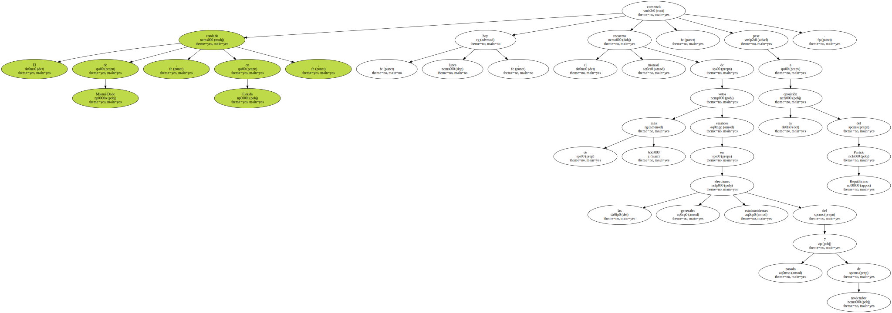Un juez estatal negó el domingo una solicitud de urgencia interpuesta por los republicanos para suspender este nuevo escrutinio , que puede prolongarse hasta el próximo 1 de diciembre , según las autoridades electorales del condado.
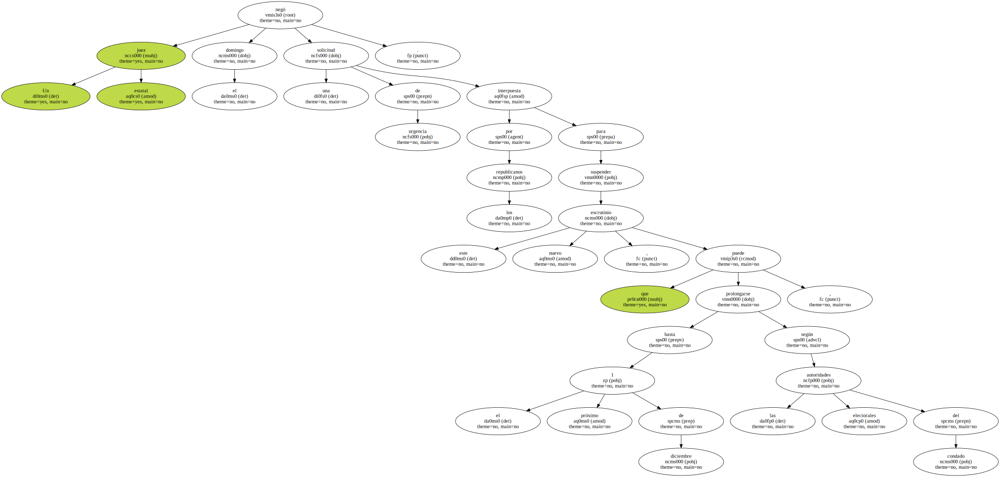La Junta de Recuento de Votos de Miami-Dade aprobó el viernes la revisión de los 614 colegios electorales tras analizar una petición de la campaña demócrata que busca obtener votos adicionales para ayudar a su candidato Al Gore a superar la escasa ventaja que le lleva su rival republicano George W. Bush.
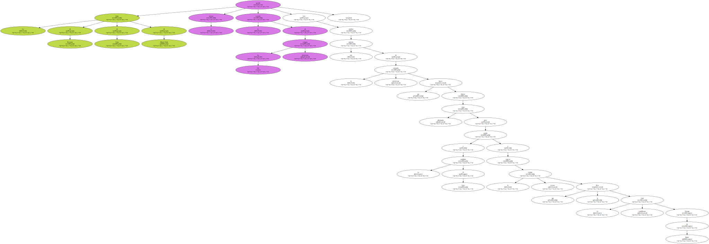El nuevo escrutinio comenzó el domingo con un recuento mecanizado que separó unas 10.700 papeletas que fueron anuladas por no tener perforado ningún agujero que indique preferencia por uno de los candidatos a presidente.
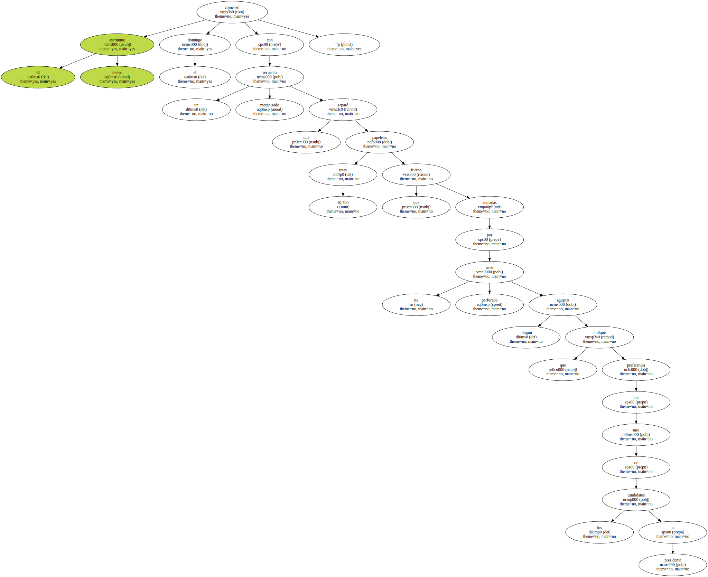Para los republicanos , este nuevo recuento mecanizado pudo haber " contaminado " o " deteriorado " las boletas.
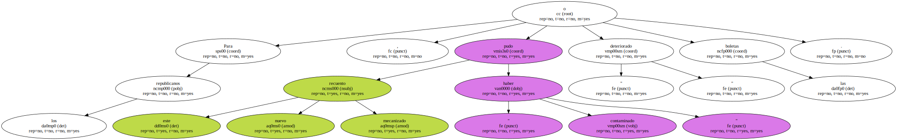Tras una visita al Departamento de Elecciones del condado , Lincoln Díaz Balart , congresista republicano por Florida , dijo que " si esto ocurriera en cualquier otro país del mundo , habría una revolución ".
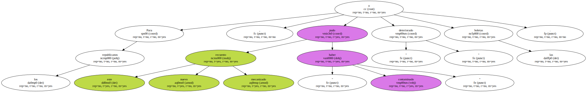Entretanto , en el condado de Broward , al norte de Miami , tras el escrutinio manual de 428 de los 609 recintos electorales , Gore había ganado 108 nuevos votos.
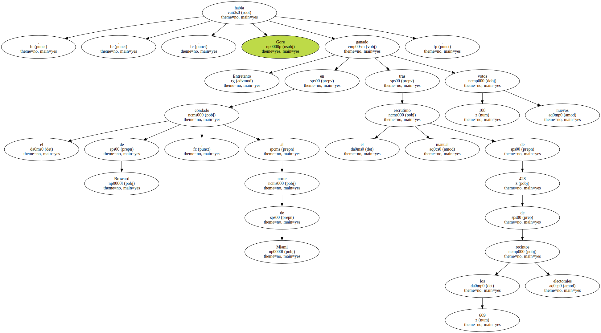En el condado de Palm Beach , también en el sureste de Florida , considerado un bastión del Partido Demócrata , el vicepresidente había perdido doce sufragios , tras el recuento de 31 de los quinientos colegios electorales.
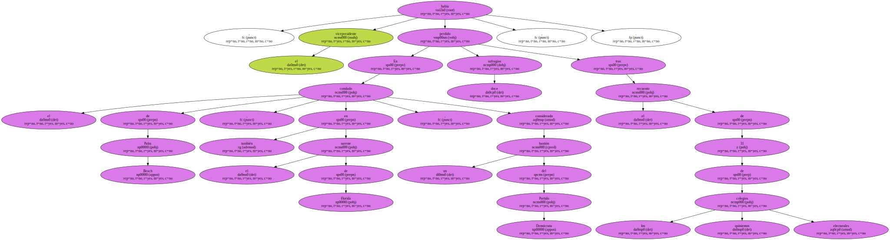Miami-Dade , Broward y Palm Beach suman unos 1,5 millones de electores.
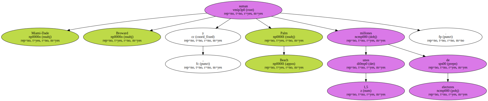La elección del próximo presidente de Estados Unidos , no obstante , depende del Tribunal Supremo de Florida que hoy celebra una audiencia crucial para decidir sobre la validez de los recuentos manuales en estos tres condados del estado.

Los siete jueces del Tribunal Supremo , seis demócratas y uno independiente , escucharán a partir de las 14.00 horas ( 19.00 GMT ) los argumentos orales del partido demócrata , a favor del recuento , y del republicano , en contra.
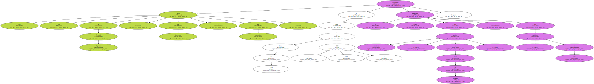La instancia judicial suprema del Estado tiene paralizada la certificación oficial del resultado de las elecciones presidenciales en Florida mientras no haya un dictamen suyo sobre el recuento manual.
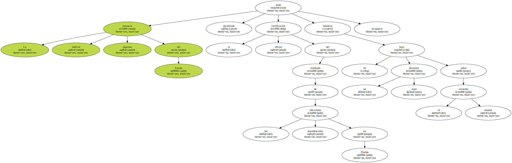El candidato presidencial republicano debería haber sido proclamado vencedor el sábado pasado en Florida con una ventaja de 930 votos sobre su rival demócrata , si no hubiera intervenido el viernes , por su propia cuenta , el Tribunal Supremo.